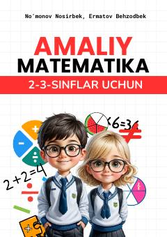

AM2-3-sinf o'quvchilari uchun matematika fanidan amaliy mashqlar va testlar to'plami.
Ushbu o'quv qo'llanma 2-3-sinf o'quvchilari uchun matematika fanidan amaliy ko'nikmalarni rivojlantirishga mo'ljallangan. Kitobda sonlarni qo'shish, ustun shaklida hisoblash va turli mantiqiy masalalar jamlangan.